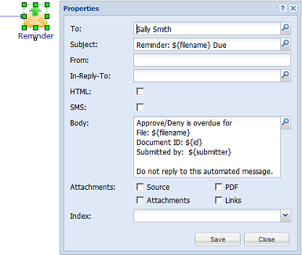

Workflow
A workflow is an arrangement of automatic actions and human tasks. A workflow can include branches by using events, filters, and timers.
Use a workflow to do things such as these:
- Submit a document for review and approval.
- Manage a request for employment.
- Make sure that an invoice is not a duplicate invoice.
- Manage approvals for purchase orders.
- Let a user request a leave of absence.
To add a workflow, use the Workflow Editor.
A workflow can be started in these ways: * From the main dashboard, a user selects a workflow form. By default, the workflow forms are available from the Workflow menu.
Sometimes, a workflow form is available only if a document is selected. In the example above, TS Approval Cycle is available only when a document is selected.
- From the main dashboard, a user forwards a document to a workflow. This method is used only for testing.
- The administrator uses a node rule to allocate the document to a workflow. For example, you can use an allocate rule to allocate a new document to another user when the document is created (use the Document.create event).
Adding a workflow
When you add a workflow, use the most recent version of Firefox or Chrome.
To add a workflow
1. Select User Management>Workflow.
2. Click Add.
3. In the Add Workflow screen, type a name and click Add.
4. Select the workflow, and click Edit Workflow.
The Workflow Editor appears in a new tab. Refer to the next section.
5. Drag objects from the Library to the main part of the screen, connect them to build the workflow, and if necessary, edit each object.
6. When the workflow is completed, click Validate to make sure that the workflow has no errors.
7. Click Save and Deploy.
The workflow is now available from the main dashboard.
The Workflow Editor
Basic Editing
Example workflow: request for approval
A request for approval workflow is as follows.
1. From the main dashboard, a user submits a document for approval. The document goes to the approver. PaperTrail sends an email to the approver.
2. One of these occurs:
- In less than 2 hours after the document moves to the approver, the approver approves the document. PaperTrail moves the document to a folder, and the workflow is completed.
- In less than 2 hours after the document moves to the approver, the approver denies the request for approval. PaperTrail sends the document back to the user who submitted the document. PaperTrail sends an email to that user. That user must correct the document, and resubmit the document.
- If the approver does not deal with the document within 2 hours, PaperTrail sends an email reminder to the approver.
In the Workflow Editor, the workflow looks like this:
An explanation of the request for approval workflow
Form
A workflow form is mechanism for completing a human task or for ending the waiting state of an unassigned document. A workflow form has zero or more fields. (To prevent confusion with forms in General>Form, this guide uses ‘workflow form’.) The workflow form TS Approval Cycle has 1 field:
In the main dashboard, after a user (the original submitter) clicks Workflow>TS Approval Cycle, the workflow form TS Approval Cycle is available.

TS Approval Cycle is available only when a document is selected. The workflow form Approve has no fields. In the main dashboard, after the original submitter submits the TS Approval Cycle workflow form, Sally S sees this:
Note. After you deploy a workflow, if you change the label of the first workflow form and then save and deploy again, the new name does not appear on the Workflow menu in the main dashboard. Although the old name appears, a user can use the workflow form. To make the name appear correctly on the Workflow menu, you must restart PaperTrail (Services>Tasks -> Restart PaperTrail).
Update Index
After a user submits the TS Approval Cycle workflow form, the next stage of the workflow is the updateIndex action (Update Index).
The Source field records the submitter as the sessionUser (the user who submitted the workflow form). Later in the workflow, the submitter is used in the Original submitter human task to send the document back to the user who submitted the workflow form.
Human Task
A human task is a task that a user must do using a workflow form. A human task can be completed in 3 ways:
- The user completes the task using a workflow form
- An event occurs.
- A timer triggers.
After PaperTrail updates the index, the document goes to Sally Smith.
On the Original submitter human task, the document is routed to the user who started the workflow.
Timer
A timer specifies an amount of time after which the next stage occurs. The time is specified in 2 ways:
- An amount of time
- A date that comes from an index. For example, if there is an index Due Date, you can put Due Date in the Duration field.
In the workflow, if the approver (Sally S) does not approve or deny in less than 2 hours, then the timer triggers and the next action is for PaperTrail to send an email.

Move
If Sally S approves the document, PaperTrail moves the document to the specified node, and the workflow ends.
Audit
The Audit screen is for many things, not only to add an audit.
The example workflowis document-based, which means that a user must send an existing document to the workflow. For an alternative method, refer to [Start a workflow without a document] The field Document Based is applicable only to the first workflow form in a workflow. Optionally, include audit and status information that will appear on the main dashboard after the workflow form is submitted:
In the Audit screen, the value in the Audit field is SUBMITTED, but the History tab shows Submitted. For consistency with other database values, we recommend that you use upper case text in the Audit field. On the History tab, PaperTrail automatically converts this to lower case text.
Examples of ways to build a workflow
Start a workflow without a document
If the start of a workflow is connected to a workflow form, the workflow form is available on the main dashboard. After a user submits the workflow form, PaperTrail creates a new [item] that is sent to the workflow.
Allocate a document back to the original recipient
This method cannot be used in the example workflow, because in the example workflow, the original submitter is not part of the workflow.
Add multiple timers
A timer triggers only 1 time. However, you can create multiple timeouts:
Do not do this:
Instead, do this:
Put a document into an unassigned state
In an unassigned state, a document is not allocated to a user, but the document remains as part of the workflow.
To let a user change the state, use a workflow form:
To use a timer to change the state:
Resume a workflow based on an event
You can resume a workflow when a specified event occurs.
In a workflow , a completeTask action ‘listens’ for the event. If the event occurs, the workflow continues. All the documents that are in the applicable nodes and for which the filters evaluate to true go to the next stage of the workflow.
This example shows part of a workflow. An agent closes an email ticket. If a customer replies to the closed ticket, the ticket is re-opened and the customer’s email is sent to the agent.
- To make the Document.response event ‘listen’ to emails, you must set up Email Import (Import Management>Email Import).
- In the Update Email Import screen, in the Attachment Policy field, select Thread.
- When a new email arrives, if there is an existing thread (conversation), then PaperTrail ‘check ins’ a new copy of the email.
- The Document.update and Document.update_content events will trigger. A Document.response event triggers, so workflows and rules can be configured to deal with the response.
For example, a workflow can notify the current user or allocate the updated document back to the original owner.
If there is no existing thread, then PaperTrail creates a new document, which starts the Document.create event.
Create a branch using filters
The example workflow uses a timer and [workflow forms] to create a branch. Another method to create a branch is to use a filter.
Complex filters can become confusing. A conditional lets you make the connections clearer.